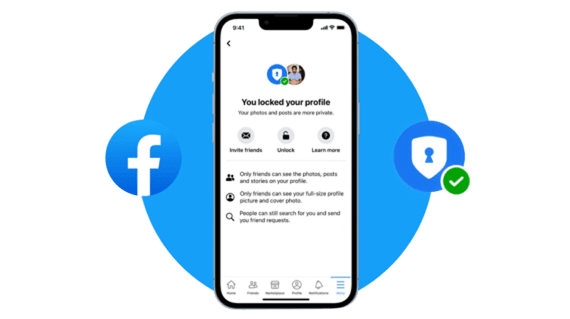

More than three-quarters of the world's population owns mobile phones, also known as smartphones, so here are some of the most important apps for your phones:
Facebook is one of the most popular social networking platforms in the world. Launched in 2004, it allows users to connect with friends, family, and colleagues regardless of geographical distances. Through their personal profiles, people can share photos, videos, and status updates to express their thoughts and life events. Additionally, Facebook offers various features like Groups for community building, Pages for businesses and public figures, and Marketplace for buying and selling items. While it serves as a powerful tool for global communication and information sharing, it also plays a significant role in digital marketing and online advertising.


Instagram is a leading social media platform centered on visual storytelling. It allows users to share photos and short videos, known as Reels, to connect with friends, influencers, and brands globally. With features like Stories that disappear after 24 hours and various creative filters, it has become a hub for digital creativity and lifestyle sharing. Beyond personal use, Instagram is a powerful tool for businesses and creators to build an audience and showcase their work in a visually engaging way.


Free Fire is a world-famous mobile battle royale game developed by Garena, known for its fast-paced and action-packed gameplay. In each 10-minute match, 50 players are dropped onto a remote island, where they must scavenge for weapons, equipment, and vehicles while staying within a shrinking "safe zone." The ultimate goal is to be the last person or team standing to achieve the "Booyah!" What sets Free Fire apart from other games in the genre is its unique roster of characters, each possessing special abilities that can turn the tide of battle. With its accessible graphics that run smoothly on most devices and its intense combat mechanics, Free Fire has built a massive global community of competitive gamers.
.png)
.jpg)